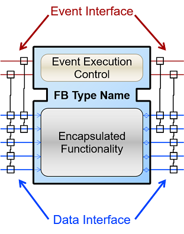
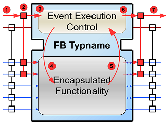
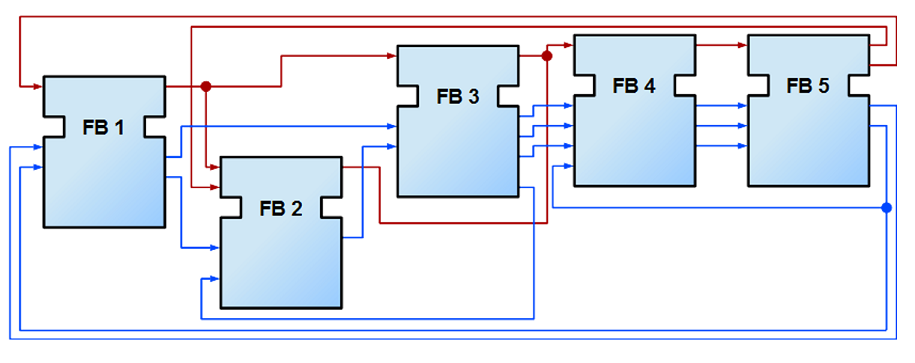
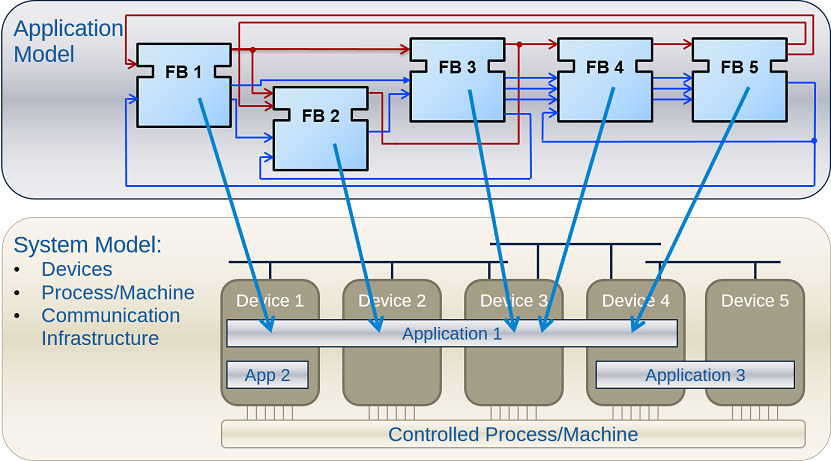
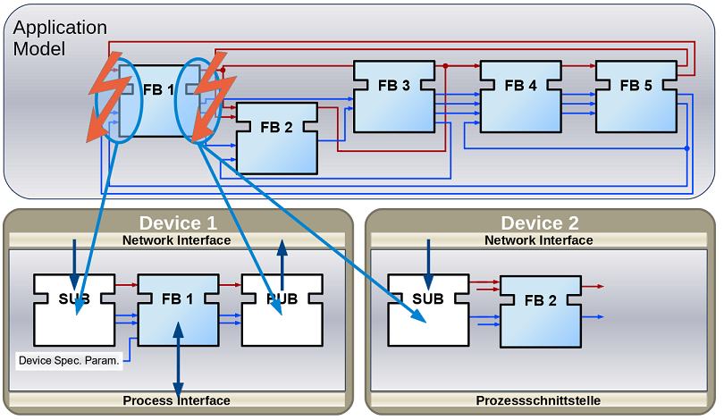
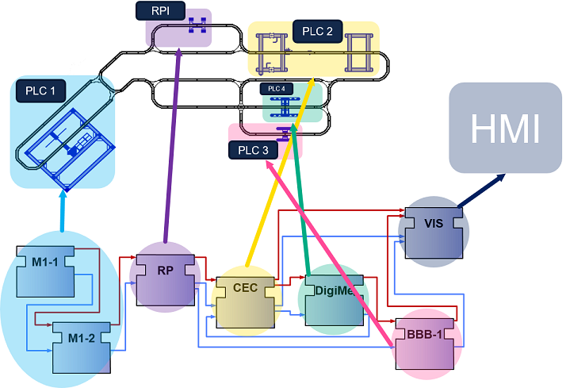
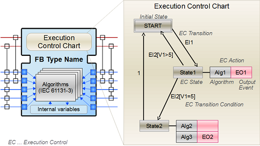
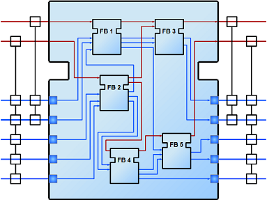
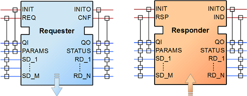

IEC 61499 101
PLC Programming according to IEC 61131-3
A PLC is, basically, a small computer used in industry. It has inputs and outputs for controlling various systems. In general, buttons and sensors generate the inputs, while the outputs control motors. If you have an IT background, you may want to imagine a PLC as a Raspberry Pi, an Arduino, a Beagle Bone Black or a similar embedded board with inputs and outputs. A PLC is however specifically prepared for use in industry. The PLC is programmed according to the required application. Like computers, PLCs can be acquired from many different manufacturers. PLCs are efficiently produced for narrowed purposes, in contrast, a normal PC is a general-purpose computer, meaning that you can use it for all kinds of tasks. Hence, each PLC manufacturer not only develops the hardware, but also the basic software (firmware) running on the PLC. The firmware is comparable to the operating system of normal computers (Linux, Windows, Mac OS).
To program a PLC, you need an IDE (integrated development environment, it is a software where you can do all tasks related to a certain subject, in this case related to the PLC in use) from the PLC vendor. The IDE runs on your normal computer (Linux, Windows, Mac OS) and allows coding your application and then uploading it to the PLC. Please note the different terms we are using to distinguish similar concepts:
-
Application: The software that is programmed by the user and runs on the PLC. When you "program a PLC", you are creating the application.
-
IDE: The software provided by the PLC vendor that allows coding an application and uploading it to the PLC, debugging it, …
-
Firmware: The basic software that is already uploaded on a PLC by the vendor. The IDE interacts with the firmware and the user can normally only update it but not modify it.
Putting it simply, the following steps are required so a PLC can control something:
-
Get the IDE from the vendor web page and learn how to use it.
-
Get to know the capabilities of the PLC and how your application can access the inputs and outputs.
-
Code your application in the IDE.
-
Connect your computer to the PLC, usually via an Ethernet cable, and upload your application from the IDE to the PLC. (Some vendors may offer several small tools instead of an IDE.)
-
Now your application runs on the PLC whenever it is switched on.
Programming PLCs
Even though each PLC vendor offers a specific IDE, the programming languages for PLCs were standardized in IEC 61131-3. Five different programming languages are part of the standard:
-
Ladder Diagram (LD), graphical
-
Function Block Diagram (FBD), graphical
-
Structured Text (ST), textual
-
Instruction List (IL), textual (deprecated)
-
Sequential Function Chart (SFC), graphical.
These languages differ significantly from "conventional" programming languages, such as C, C++, Java or Python. To simplify the programming of PLCs, the languages mentioned in the standard have a high level of abstraction, particularly the graphical ones. Additionally, some PLCs can be programmed with conventional programming languages.
We’ll focus on the FBD programming language. The following image shows a basic example of a FBD:

In this image, we see 3 function blocks (on_delay1, AND, alarm), 4 inputs (user_ok, T#5s, packet_arrived, conveyor_full), 2 outputs (red_light, conveyor_motor) and the connections between the function blocks (FBs). Let’s focus on the rightmost FB "alarm". Its type is "RS" and its instance name is "alarm". Many instances of the same type can be created. All these instances behave alike, but each instance has an individual internal state. For all FBs, the inputs are located on the left side and the outputs on the right side of the block. If you have experience in a conventional programming language, you can interpret a FB as a function you can call. The inputs correspond to the parameters of a function and the outputs to the return value. A function block can have several outputs. For the RS FB, the output Q turns true if the input S is true and the input R is false; and Q turns false when R is true.
After "programming"/drawing this application in the IDE, you have to compile it and then upload it to the PLC. To see the behavior in the real system, the physical inputs and outputs of the PLC must be connected to the real sensors and the motor. Each IDE has its own way of representing the physical inputs/outputs during programming.
Alright! This is all you need to know about PLCs for now. This section dealt with the standard IEC 61131. We’ll get closer to Eclipse 4diac in the next section where we discuss a newer standard.
IEC 61499
The industry is moving from centralized systems towards a more distributed paradigm. Large systems with a central intelligence controlling everything are transformed to distributed systems. In the distributed system, individual parts have intelligence and can communicate with each other smoothly, so the system acts as one whole. IEC 61499 defines a domain-specific modeling language for developing distributed industrial control solutions. IEC 61499 extends IEC 61131-3 by improving the encapsulation of software components for increased re-usability, providing a vendor independent format, and simplifying support for controller-to-controller communication. Its distribution functionality and the inherent support for dynamic reconfiguration provide the required infrastructure for Industry 4.0 and industrial IoT applications.
Two big problems arise with IEC 61131-3. One is caused by feedback connections in the application. In a Function Block Diagram like the one illustrated above, but with added feedback, the behavior of the system depends on the implementation of the underlying software. Secondly, in case of combining PLCs from different vendors, the communication between them is not standardized and is normally difficult to achieve.
In other words, IEC 61499 defines a modeling language that is similar to the old FBs shown in the previous section. This new language is however oriented to distributed systems. Therefore, it allows modeling the whole system, even if it is comprised of smaller parts (i.e., the individual PLCs). FBs are used to completely encapsulate functionality since no global variables are allowed. The application is then created by connecting the individual FBs. Additionally, the standard defines a model to represent the devices in a system and their connections. If the application is split to several devices, all FBs in the application can be mapped to their respective devices.
So, without going any further into the concepts, let’s look at some images to understand the capabilities and new features introduced by IEC 61499.
Main parts of IEC 61499
FB Interface
The image below shows the new appearance of the FB in IEC 61499. The function block encapsulates the desired functionality. Again, the inputs are on the left and the outputs on the right, but now the interface differentiates events and data. The events on the top part of the FB are shown as red lines, and the data on the lower part as blue lines. The events trigger the functionalities of the FBs, which then use the data that are available at the data inputs. Events and data connections are not compatible, meaning that you cannot connect them in any way. It is allowed to fan out data connections. A fan-out describes an output that is connected to several inputs of the next stage. This means that several data inputs of the next stage can be connected to the output. On the contrary, a fan-in of data connections is not allowed. A fan-in is the connection of several outputs of the previous stage to an input. Therefore, a FB would need to choose its input value from the data connections. For event connections, both a fan-in and a fan-out are possible.
In the graph, each event input is connected to several data inputs via lines and small squares. Similarly, each event output is connected to several data outputs. This connection defines which data inputs/outputs are refreshed when an input/output event occurs. The behavior of the function block depends on its Event Execution Control. When an FB is triggered by an input event, the Event Execution Control coordinates the execution of encapsulated functionalities and sending of output events. Depending on the kind of FB (see below), the Event Execution Control is implemented in different ways.

FB Internal Sequence
The following image shows how a FB is triggered to execute its functionality. A sequence of steps is executed when an event arrives at the FB.

-
An input events arrives at the FB.
-
The data inputs related to the incoming event are refreshed.
-
The event is passed on to the Event Execution Control.
-
Depending on the FB type and execution control, internal functionality is triggered for execution.
-
The internal functionality finishes the execution and provides new output data.
-
The output data related to the output event are refreshed
-
An output event is sent.
Step 4 to 7 may be repeated several times. Although an output event can be triggered, this need not be the case.
Distributed Application
We defined now FBs and their behavior. In the next image, an example for an application created according to the IEC 61499 is shown. You can see that data and events are not connected to each other.

As the standard allows modeling of distributed systems, the application need not run on only one device. Instead, it can be split and deployed to several devices (PLCs). You can even have many applications, which are then distributed over many devices. The System Model view helps the user to design this distribution. It is illustrated in the following figure. A device may comprise several resources, which can be imagined as threads within a device. To be precise, the FBs are actually loaded onto a resource, not the device itself.

The image shows that not all FBs of an application are run on the same device. Additionally, a device can run many applications or many parts of applications at the same time.
|
Important
|
An FB cannot be split to several devices. |
Broken Connections
While it’s nice that you can split the application over several devices, the data and events need to be sent to the next device in order to maintain their flow. Yes! That’s why you fix these connections with special FBs to publish information and subscribe to it as shown in the image below. Since these new FBs are not part of the full application, they are only visible in the resource view.

Now the image below makes sense. Various PLCs are connected and the function blocks are spread among them. The HMI is the human machine interface. Of course, we need to investigate how the broken connections are actually implemented or how real hardware inputs/outputs are accessed. We’ll see about it later when we consider the different types of FBs.

Kinds of Function Blocks
IEC 61499 defines three kinds of FBs that you can use when developing your application:
-
Basic Function Block (BFB):
In the BFB you can define a state machine using the Execution Control Chart (ECC). The ECC decides which algorithm is executed based on its state and the input events. The graph below shows a FB with an exemplary ECC. The gray boxes (Alg1-Alg3) in the ECC are the algorithms encapsulated inside the Function Blocks. These algorithms are written by the user, using for example Structured Text, which is one of the programming language defined in IEC 61131. The pink boxes (EO1, EO2) are the output events that are triggered when the state is accessed. Transitions between the states (brown boxes) are shown as arrows. They are connected to a certain event, unless the transition is named as "1", in which case no event is needed and the execution control jumps directly to the next state. For example, if the FB is in the START state and an EI1 event arrives, the FB jumps to State1, executes Alg1 and outputs an EO1 event.
Some transitions include an expression between square brackets. These expressions are conditions that need to be fulfilled when the event arrives. Only when the conditions hold, the execution control switches to the next state. An event is consumed only once. If the transition from State1 back to START was again at E1, no infinite loop is created. Only when a new event E1 arrives, the state jumps back to START. These kinds of loops do occur with "1" on the transition, since only events are consumed.

-
Composite Function Block (CFB):
The CFB simply has an internal network of other FBs.

-
Service Interface Function Block (SIFB):
SFBs are FBs that are needed to access specific parts of the hardware. As seen above, the same application can be deployed to several devices. Then, the application needs to access inputs or outputs and, to communicate, even specific hardware. For that, SFBs are needed. They are used for anything that needs to access the platform, which BFBs or CFBs cannot do. These types of FBs are activated not only by an incoming event but also by the hardware. Therefore, a Responder FB can trigger an event every time a packet arrives.

Compliance Profiles
As the standard is intended to be abstract, many "things" needed for proper execution of a system, such as communication, are not included. But the standard does state how these "things" must be specified. The specifications are called Compliance Profiles. An example of a Compliance Profile is the IEC 61499 Compliance Profile for Feasibility Demonstrations provided by Holobloc Inc. You can see the Compliance Profile as a way of filling the gaps due to the abstraction of the standard.
Where to go from here?
-
Now that you have a better understanding of the IEC 61499 standard, it’s time to understand what Eclipse 4diac is and which tools are related to it. Take a look at the following page:
Eclipse 4diac Framework -
In case you’d like to return to the "Where to Start"-page, we leave here a fast access for you:
Where to Start
Or Go to top